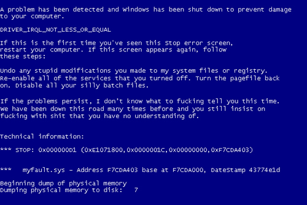

- Errores del registro. El registro de Windows contiene la información sobre el equipo y los programas instalados en tu computadora. Si algún programa malicioso corrompe el registro, podría ocasionar un error de pantalla azul. Estos programas pueden ser arreglados ya sea manualmente, editando el registro manualmente, o con algunos programas especialmente diseñados que pueden revisar y reparar un registro corrupto. Antes de editar el registro, SIEMPRE debes hacer un respaldo del mismo.
